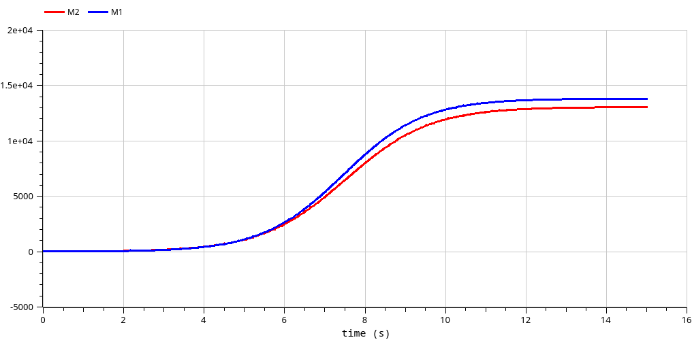
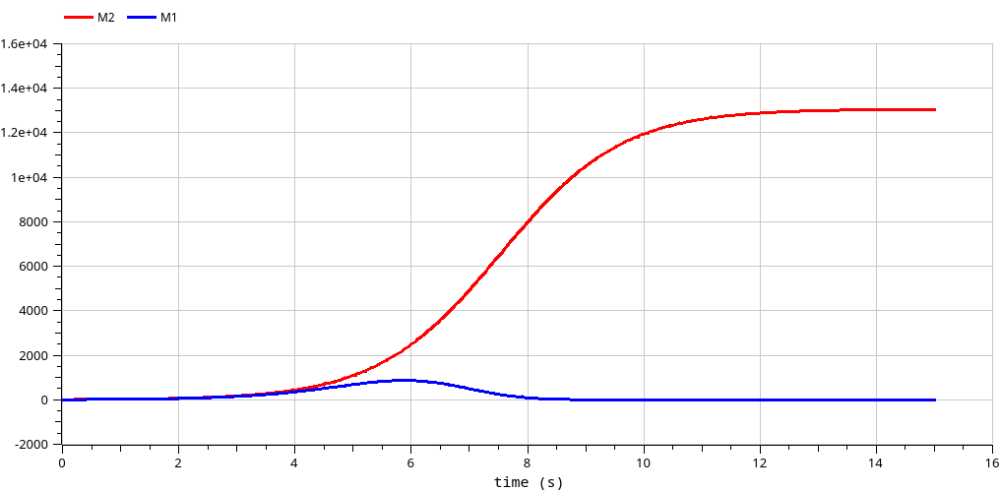

Модель конкуренции двух фирм
Стариков Д. С.
Российский университет дружбы народов, Москва, Россия
31 мая 2025
Изучить модель конкуренции двух фирм, производящих взаимозаменяемые товары одинакового качества и находящихся в одной рыночной нише, и рассмотреть 2 случая:
Вариант 52.
Для первого случая (только рыночная борьба):
$\frac{dM_1}{d\theta} = M_1 - \frac{b}{c_1} M_1 M_2 - \frac{a_1}{c_1} M_1^2,$
$\frac{dM_2}{d\theta} = \frac{c_2}{c_1} M_2 - \frac{b}{c_1} M_1 M_2 - \frac{a_2}{c_1} M_2^2,$
где $a_1 = \frac{p_{cr}}{\tau_1^2 \tilde{p}_1^2 Nq}$, $a_2 = \frac{p_{cr}}{\tau_2^2 \tilde{p}_2^2 Nq}$, $b = \frac{p_{cr}}{\tau_1^2 \tilde{p}_1^2 \tau_2^2 \tilde{p}_2^2 Nq}$, $c_1 = \frac{p_{cr} - \tilde{p}_1}{\tau_1 \tilde{p}_1}$, $c_1 = \frac{p_{cr} - \tilde{p}_1}{\tau_1 \tilde{p}_1}$,$c_2 = \frac{p_{cr} - \tilde{p}_2}{\tau_2 \tilde{p}_2}$
Во втором случае (формирование общественного предпочтения):
$\frac{dM_1}{d\theta} = M_1 - (\frac{b}{c_1}+0.00042) M_1 M_2 - \frac{a_1}{c_1} M_1^2,$
$\frac{dM_2}{d\theta} = \frac{c_2}{c_1} M_2 - \frac{b}{c_1} M_1 M_2 - \frac{a_2}{c_1} M_2^2.$
M10 = 7.9, M20 = 9.9, pcr = 49, N = 50, q = 1, τ1 = 35, τ2 = 29, p̃1 = 9.9, p̃2 = 11.9
Модель рекламной кампании в OpenModelica реализована
следующим образом:
model lab08
parameter Real p_cr=49;
parameter Real p1=9.9;
parameter Real p2=11.9;
parameter Real tau1=35;
parameter Real tau2=29;
parameter Real N=50;
parameter Real q=1;
parameter Real a1=p_cr/(tau1*tau1*p1*p1*N*q);
parameter Real a2=p_cr/(tau2*tau2*p2*p2*N*q);
parameter Real b=p_cr/(tau1*tau1*p1*p1*tau2*tau2*p2*p2*N*q);
parameter Real c1=(p_cr-p1)/(tau1*p1);
parameter Real c2=(p_cr-p2)/(tau2*p2);
Real M1(start=7.9);
Real M2(start=9.9);
//parameter Real eps=0; // случай 1
parameter Real eps=0.00042; // случай 2
equation
der(M1) = M1 - (b/c1+eps)*M1*M2 - a1/c1*M1*M1;
der(M2) = c2/c1*M2 - b/c1*M1*M2 - a2/c1*M2*M2;
annotation(
experiment(StartTime = 0, StopTime = 15));
end lab08;

В ходе выполнения лабораторной работы познакомились с моделью конкуренции двух фирм и на конкретном примере рассмотрели влияние общественного предпочтения на оборот компании.